Moergestel
Verdraaid lekker eten, feesten en borrelen
Een gezellig eetcafé met producten uit de streek, feestzalen voor elke gelegenheid en catering voor thuis. Al vijf generaties familie Rijnen.
Eetcafé donderdag t/m zondagDo t/m za vanaf 11.00, zondag vanaf 10.00
Keuken tot 20.30 uurHele of Halve Draai tot 21.00 uur
Terras onder de stretchtentOok bij slechter weer
Het eetcafé
Het sfeervolle eetcafé met de "Vurkaomer" is de ideale plek voor een lekker hapje.
Je kunt genieten van een heerlijke lunch, diner of gezellig borrelen, met diverse producten uit onze streek. Het is ook mogelijk om je feest in het eetcafé te vieren: neem alvast een kijkje in de informatiemap en vraag vrijblijvend naar de mogelijkheden.
Openingstijden
Donderdag t/m zaterdag vanaf 11.00 uur, zondag vanaf 10.00 uur. Maandag, dinsdag en woensdag gesloten.
De keuken is open van donderdag t/m zondag van 11.00 tot 20.30 uur. "Hele of Halve Draai" is tot 21.00 uur te bestellen.
In de zaal kun je 7 dagen per week reserveren, dus ook op dinsdag en woensdag. Voor groepen vanaf 25 personen kun je contact opnemen voor de mogelijkheden buiten de openingstijden.
€ 36,50per persoon
Hapje voor Hapje
Bourgondische tapas: avondvullend en onbeperkt genieten van heerlijke kleine (streek)gerechtjes.
€ 36,50 per persoon, exclusief consumpties.
Eerstvolgende avonden: 27 november en 18 december. Reserveren kan vanaf 17.30 uur. De voor- en hoofdgerechtjes bestel je van 17.30 tot 21.30 uur, de nagerechtjes tot 22.00 uur.
Per ronde kies je twee gerechtjes. Er zijn meer dan 35 verschillende hapjes: voorgerechtjes, soepjes, salades, hoofdgerechtjes met vlees, vis of vegetarisch, nagerechtjes en een kinderkeuze. Iedere nieuwe editie zijn er nieuwe, seizoensgebonden hapjes. Heb je een allergie? Laat het ons weten.
De menukaart wisselt iedere keer, daarom tonen we hier geen vaste kaart. De datums staan ook op Facebook.
Reserveren
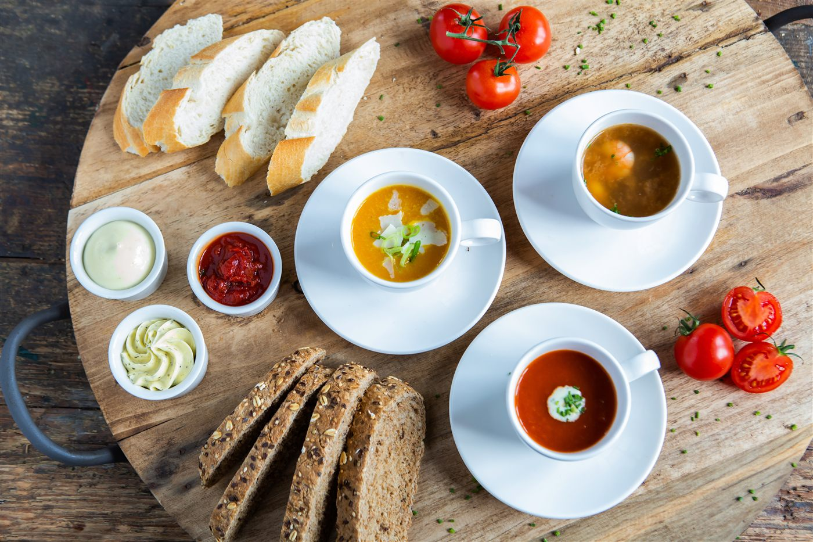
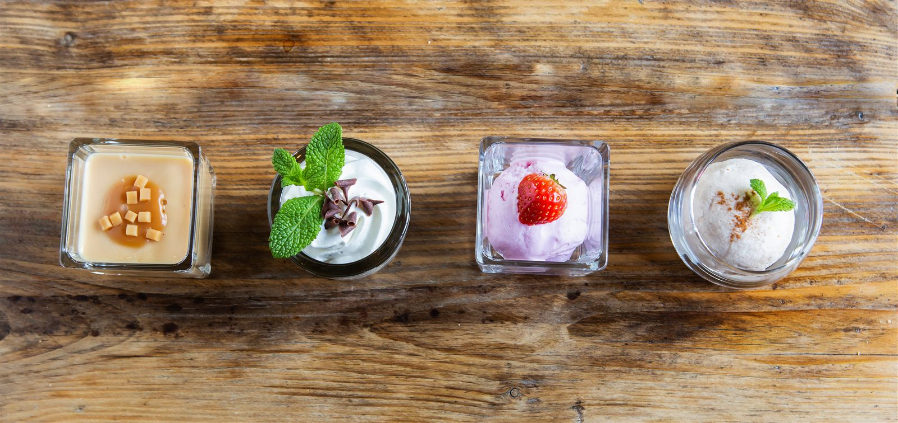
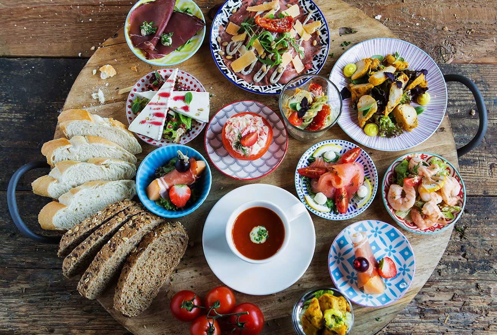
Wij zijn trots op onze streek. Daarom laten we je graag de lekkerste dingen uit de regio proeven: onze carpaccio komt van de runderen van Henk Broeders, de pasham van Fam. v/d Pas uit Tilburg, de brie fenegriek van Boerderij de Walhoeve in Goirle en de witte chocolade-framboos-, stracciatella- en pistacheijs van 't IJsboerinneke.
Iets te vieren?
Je kunt bij ons terecht voor een verjaardagsfeest, bruiloftsfeest, personeelsfeest, jubileum of vergadering. Wij verzorgen een feest zoals jij het wilt.
De feestzaal kan gesplitst worden in verschillende delen, zodat er voor iedere partij een gezellige ruimte ontstaat. Is het lekker weer? Dan kun je eventueel buiten feesten onder de stretchtent. Opstelling en indeling zijn makkelijk te veranderen en eigen decoratie en kleuren zijn mogelijk. Er zijn een invalide parkeerplaats en toilet.
Hulp nodig? Laat het ons weten, dan maken we onder het genot van een kopje koffie een vrijblijvende offerte. Een feest op maat.
Onze zalen heten De Stek en De Spiegelzaal, en daarnaast is er De Vurkaomer in het eetcafé.
Verjaardagen
Voor het vieren van je persoonlijke mijlpaal, of gewoon omdat je een jaartje ouder bent geworden. Er zijn verschillende mogelijkheden, voor grote en kleine partijen: een dag of avond geheel naar eigen wens met bijvoorbeeld een lunch, diner of feestavond met heerlijke hapjes of een uitgebreid buffet.
Jubilea
Een jubileum is de perfecte gelegenheid om te vieren. Een mijlpaal in je huwelijk, werk of leeftijd kun je toch niet ongemerkt voorbij laten gaan? Vier het met een receptie, diner of een geheel verzorgde feestavond. Maak gerust een afspraak voor een vrijblijvend gesprek.
Bedrijfsfeesten
Met het hele team een gezellig dagje vertoeven onder het genot van drankjes en hapjes? Bij 't Draaiboompje zijn vele originele activiteiten te reserveren, van koffiegame tot een compleet verzorgde feestavond. Je vult de gehele dag naar jouw wens in. Offerte op maat is mogelijk.
Vergaderingen
We hebben de keuze uit verschillende vergaderzalen en je kiest zelf de juiste opstelling. Voor een klein gezelschap is een "blokopstelling" handig voor interactie, voor een groter gezelschap een "theateropstelling".
Trouwen bij 't Draaiboompje
Ben je op zoek naar een trouwlocatie in Brabant? 't Draaiboompje is een officiële trouwlocatie, dus je kunt elkaar hier het jawoord geven. Wij weten hoe belangrijk deze dag is en helpen graag om jullie dag onvergetelijk te maken.
Thuisgevoel, gemoedelijkheid, gastvrijheid en goed eten en drinken: alles is mogelijk en niemand komt iets tekort. We helpen met de opbouw en aankleding. Landelijke uitstraling in een mooie groene omgeving, met meerdere zalen voor receptie, diner en de avond van het trouwfeest. Of gezellig buiten trouwen en feesten onder de stretchtent. Bij 't Draaiboompje draait alles om jullie.
We helpen graag de trouwdag samen te regelen. Foto's gemaakt door onder anderen Jennifer Voets en Mark van Dis. De bruiloft checklist vraag je bij ons aan.
Vraag de bruiloft checklist aan
Informatiemap 2026: mogelijkheden en prijzen
Beste lezer, het uitzoeken kan beginnen! Hieronder de mogelijkheden en prijzen van 't Draaiboompje voor feesten en bijeenkomsten. Wil je je feest of bijeenkomst anders invullen? Laat het ons weten: bij ons is bijna alles mogelijk. Wil je een barbecue, dinerbuffet of een brunch? Of catering aan huis? Vraag naar de mogelijkheden. Prijzen zijn per persoon, tenzij anders vermeld.
Koffie, borrel en drankprijzen
Verdraaid lekker voor bij de koffie
Slagroom bonbons
€ 1,35Soesje poedersuiker
€ 2,35Soesje chocolade
€ 2,55High tea zoete mini assorti
€ 3,20Petit fours
€ 4,30Gebak
€ 4,50
Voor bij de borrel
Gemengde nootjes
€ 1,00Gemengde nootjes en chips
€ 2,15Gemengde nootjes met kaaskoekjes
€ 2,15Gemengde nootjes met zoute koekjes
€ 2,15Gemengde nootjes met kaasstengels
€ 2,15
Drankprijzen
Dommelsch bier
€ 3,30Per glas
Hertog Jan bier
€ 3,50Per glas
Flesje fris
€ 3,20Per fles
Flesje choco, fristi of vruchtensap
€ 3,40Per fles
Ice tea green en ice tea
€ 3,40Per glas
Wijn
€ 4,60Per glas
Port / sherry
€ 5,00Per glas
Prosecco
€ 5,00Per glas
Buitenlands gedistilleerd
€ 5,25Per glas
Koffie en thee
€ 3,10Per kop
Cappuccino
€ 3,40Per kop
Speciaalbieren
Rosébier, Liefmans
€ 4,00Per fles
Radler 0.0, Radler 2%, witbier 0.0
€ 3,80Per fles
Trappistenbier
vanaf € 4,70Per fles
Diner en soepen
Voorgerechten
Bij de voorgerechten wordt stokbrood met kruidenboter geserveerd. Er mag een keuze gemaakt worden uit 2 voorgerechten.
Carpaccio
€ 11,95Dun gesneden rundvlees · oude kaas · pijnboompitten · zongedroogde tomaten · truffelmayonaise
Salade gemarineerde kip
€ 11,95Stukjes gemarineerde kipfilet · sla · komkommer · tomaat · rode ui · pestomayonaise
Garnalensalade
€ 12,25Noorse garnalen · sla · tomaten · komkommer · cocktailsaus
Neusje van de zalm
€ 12,45Gerookte zalmfilet · sla · tomaat · komkommer · rode ui · citroenmayonaise
Salade geitenkaas van de "Walhoeve"
€ 11,75Geitenbrie fenegriek · sla · walnoten · tomaten · spekjes · honing-mosterddressing (ook vegetarisch mogelijk)
Salade van "Reijrink" paling
€ 16,95Deze delicatesse komt van Moergestelse bodem. Komkommer · tomaat · olijven · citroenmayonaise
Plateautje vooraf
€ 12,95Kies 4 voorgerechtjes, geserveerd in kleine glaasjes en schaaltjes op onze draaiplateautjes.
Carpaccio met truffelmayonaise
Noorse garnalencocktail met cocktailsaus
Gerookte zalm met citroenmayonaise
Gerookte eendenborst met frambozendressing
Gerookte ham met meloen
Gemarineerd kipspiesje met pestomayonaise
2 gamba's aan een stokje
Briepuntjes met honing-mosterddressing
Vitello tonnato met tonijnmayonaise
Asperge met ham (seizoensgebonden)
Soepen
Bij de soepen wordt stokbrood en kruidenboter geserveerd.
Groentesoep
€ 5,60Runderbouillon · vlees · groenten
Tomatensoep
€ 5,60Balletjes · basilicumroom
Champignonsoep
€ 5,60Champignons · bosui · achterham
Kippensoep
€ 5,60Kipfilet · bosui · omeletreepjes
Aspergesoep
€ 6,60Asperges van Fam. Schuurmans · achterham. Alleen in het seizoen.
Mosterdsoep
€ 5,60Spekjes of gerookte zalmreepjes
Kerriesoep
€ 5,60Kip of spekjes
2 soepen in terrines op tafel
€ 7,50Per persoon, de terrines worden bijgevuld
2 soepen per kop geserveerd
€ 5,95Per persoon
Hoofdgerechten
Voor het menu kiest u maximaal 3 hoofdgerechten. De prijs van een hoofdgerecht is € 22,25 per persoon.
Vlees
€ 22,25Varkenshaas (ook met gerookte ham omwikkeld) · varkensschnitzel · beenham · kipsaté · gemarineerde kipfilet · runderstoofpot · rundfilet
Kogelbiefstuk
+ € 3,50Kalfsoester
+ € 3,50Runderhaas
+ € 5,50Sauzen vlees
Per vleessoort 1 saus naar keuze: champignonsaus · rode portsaus · La Trappe biersaus · honing-mosterdsaus · pepersaus · stroganoffsaus
Vis
€ 22,25Victoriabaarsfilet · gamba's in knoflookroomsaus · kabeljauwfilet
Scholfilet
+ € 3,50Zalmfilet
+ € 3,50Sauzen vis
Per vissoort 1 saus naar keuze: dillesaus · tuinkruidensaus · romige vissaus · witte wijnsaus
Bij het hoofdgerecht
Geserveerd met friet en nog 1 soort aardappelen, roerbakgroenten óf 1 andere soort groente op bord, salade van diverse slasoorten en mayonaise.
Bijgerechten
Voor een extra bijgerecht berekenen we € 2,25 per persoon.
Aardappelen
Aardappelgratin · gebakken krieltjes · gebakken aardappelpartjes · aardappelpuree
Groenten
Sperzieboontjes met of zonder spek · bloemkool met romige saus · witlof met ham en/of kaas · snijboontjes · gebakken champignons
Asperges van Fam. Schuurmans uit Heukelom
+ € 3,00In het seizoen, met een botersaus en ei
Nagerechten
Boerenroomijs met slagroom
€ 7,35Op tafel komen schaaltjes met warme kersensaus, chocoladesaus en verse vruchtjes.
Dessert Draaiboompje
€ 8,25Een kleurrijke verrassing van verschillende heerlijke zoetigheden met o.a. ijs, mousse en parfait op een bord.
Dessert buffet
€ 11,95Drie smaken ijs naar keuze · chocolademousse · aardbeien bavarois · warme chocoladesaus · warme kersensaus · verse vruchtjes · slagroom
Bruidsijstaart
€ 8,95Drie soorten ijstaart van 't IJsboerinneke naar keuze. Op tafel komen schaaltjes met slagroom.
IJs van 't IJsboerinneke, 1 smaak
€ 2,75Met slagroom, geschept in een bakje of hoorntje
IJs, 2 smaken
€ 3,95IJs, 3 smaken
€ 5,25IJs, 4 smaken
€ 6,25Huur ijsvitrine
€ 20,00Mits de ijsvitrine te reserveren is
Plateautje achteraf
€ 11,25Kies 4 nagerechtjes: chocolademousse · ananas bavarois · aardbei bavarois · Monchou kersen Bastogne ijs · boerenroomijs · karamel-zeezout ijs · kletskoppenparfait · crème brûlée · brownies · brie en oude kaas
Borrelplanken en hapjes
Borrelplanken
Borrelplank "klein"
€ 4,50Per persoon: 3 soorten kazen · 2 soorten worst · groene olijven · tomaatjes · komkommer · druifjes · walnoten
Borrelplank "normaal"
€ 9,95Per persoon: 3 soorten kazen · 2 soorten worst · wraps met gerookte zalm, sla, komkommer en roombieslookkaas · gemarineerde kipspiesjes · gemarineerde gamba's · groene olijven · tomaatjes, komkommer, paprika · druifjes · walnoten
Borrelplank "luxe"
€ 12,75Per persoon: 3 soorten kaas · 2 soorten worst · gemarineerde kipspiesjes · gemarineerde gamba's · paling van Fam. Reijrink uit Moergestel · wraps met gerookte zalm, roombieslookkaas en komkommer · wraps met gerookte ham, pestomayonaise en zongedroogde tomaten · groene olijven · mosterd · druifjes · walnoten
Vleeshapjes
Warm borrelhapje, zoals bitterbal enz.
€ 1,05Wrap met gerookte kip en pestomayonaise
€ 1,75Wrap met gerookte ham en truffelmayonaise
€ 1,75Spiesje met kaas, worst, ananas en augurk
€ 1,75Stokbrood carpaccio
€ 1,75Stokbrood gerookte kip
€ 1,75Mini carpaccio van rundvlees
€ 2,95
Vishapjes
Stokbrood met gerookte forel
€ 1,85Stokbrood met zalmfilet
€ 1,85Stokbrood met haring
€ 1,85Wraps met gerookte zalmfilet en roombieslookkaas
€ 1,85Stokbrood met "Reijrink" paling
€ 2,75
Vegahapjes
Gevuld eitje
€ 1,45Stokbroodje brie
€ 1,75Spiesje met olijf, zongedroogde tomaat en kaas
€ 1,75Stokbrood met tomatentapenade
€ 1,75Stokbrood met olijventapenade
€ 1,75Stokbrood eiersalade
€ 1,75
Afsluiters
Kroket of frikandel
€ 2,35Broodje kroket of frikandel
€ 3,00Puntzak friet met mayonaise
€ 2,95Kipsaté met pindasaus en 2 stukjes stokbrood
€ 3,95Mini worstenbroodje
€ 2,25Worstenbroodje
€ 3,35
Buffetten
Koud en warm buffet
Vanaf 10 personen te bestellen. Voor gasten met een allergie of vegetariërs maken we vervangende gerechten.
Koud en warm buffet
€ 31,25Per persoon
Koud
Rundvleessalade · pastasalade met gemarineerde kip, zongedroogde tomaten, bosui en pestomayonaise · gevuld eitje · rundercarpaccio met pijnboompitjes, oude kaas en truffelmayonaise · gerookte forelfilet met citroenmayonaise · gerookte zalmfilet met cocktailsaus · huisgemaakte beenhamsalade · krabsalade · kruidenboter · tomatentapenade · diverse stokbroden
Warm
Kies 3 warme vleesgerechten: varkenshaaspuntjes in pepersaus óf champignonsaus · kipblokjes in satésaus óf oosterse saus · runderstoofpot met gestoofde groenten · gehaktballetjes in satésaus, oosterse saus óf tomatensaus · kippendijenstoofpot bereid met La Trappe bier · ambachtelijke beenham in de jus
Erbij
En kies uit: frietjes met mayonaise · gekruide rijst · aardappelgratin
Extra te bestellen, koud
Vanaf 5 personen per item.
Eiersalade (50 gr.)
€ 1,35Gerookte paling van rokerij "Reijrink" (50 gr.)
€ 6,75Noorse garnalen met cocktailsaus (50 gr.)
€ 2,95Haring half
€ 1,60Rundvleessalade (100 gr.)
€ 1,95Aardappelsalade (100 gr.)
€ 1,95Gerookte ham met meloen
€ 1,95Pastasalade met kip (100 gr.)
€ 2,95Pastasalade met gerookte zalm (100 gr.)
€ 3,75
Extra te bestellen, warm
Vanaf 5 personen per item.
Gamba's in knoflookroomsaus (5 stuks)
€ 7,85Kipblokjes in satésaus (100 gr.)
€ 4,95Kipblokjes in oosterse saus (100 gr.)
€ 4,95Beenham in jus (100 gr.)
€ 5,85Gebakken zalmfilet met dillesaus (100 gr.)
€ 8,95Varkenshaas in champignonsaus (100 gr.)
€ 5,85Varkenshaas in jus (100 gr.)
€ 5,65Runderstoofpot met gestoofde groenten (100 gr.)
€ 5,85Gehaktballetjes in oosterse saus (100 gr.)
€ 4,95Gehaktballetjes in tomatensaus (100 gr.)
€ 4,95Gehaktballetjes in satésaus (100 gr.)
€ 4,95Rundsfilet in jus (100 gr.)
€ 5,85Spareribs zoete honing-ketjap (450 gr.)
€ 9,95Gebakken krieltjes (150 gr.)
€ 2,50Gekruide rijst (100 gr.)
€ 2,00Aardappelgratin (150 gr.)
€ 3,25Sperziebonen met spekjes (150 gr.)
€ 2,95Bloemkool met een sausje (150 gr.)
€ 2,95
Barbecue
Barbecue
Als wij voor u bakken, komt er een toeslag van € 1,75 per persoon bij.
Barbecue suggestie 1
€ 21,25Per persoon: runderhamburger · barbecueworstje · kipsaté · gemarineerde speklap · 2 soorten verse rauwkostsalades · knoflook-, cocktail- en satésaus · rundvleessalade · stokbrood met kruidenboter · friet met mayonaise
Barbecue suggestie 2
€ 29,25Per persoon: varkenshaassaté · kipfilet madras · biefstukspies · speklap · gamba's · 2 soorten verse rauwkostsalades · knoflook-, cocktail- en satésaus · rundvleessalade · stokbrood met kruidenboter · friet met mayonaise
Vier het thuis: catering
Heb je thuis een feest te vieren? Wij maken het je makkelijk.
Of het nu gaat om lekkere hapjes, borrelplanken of een heerlijk buffet: wij kunnen het verzorgen. Mogelijkheden bespreken? Informeer, mail of bel. De hapjes, borrelplanken, buffetten en extra items uit de informatiemap hierboven kun je ook thuis bestellen; hieronder de overige items van de cateringlijst. Daarnaast is er een halfbelegd broodje voor € 1,50.
Rond kerst en oudjaar is er een aparte bestellijst. Vraag ons naar de actuele lijst.
Mail je bestelling
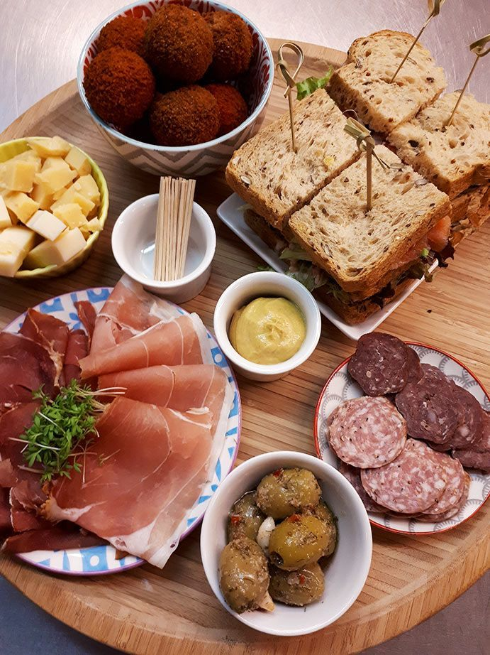
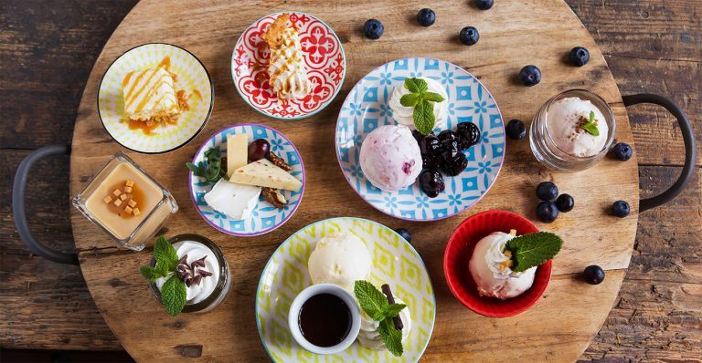
Feestschotels
Feestschotel A
€ 9,25Per persoon: rundvleessalade, gevulde eieren, gerookte ham, druiven, boerenham met asperges, brie, kipspiesjes, komkommer en tomaat
Feestschotel B
€ 13,25Per persoon: rundvleessalade, gevulde eieren, gerookte ham, druiven, boerenham met asperges, Noorse garnalen, haring, gerookte zalmfilet, gerookte forelfilet, komkommer en tomaat
Feestschotel C
€ 18,50Per persoon: rundvleessalade, gevulde eieren, gerookte ham, druiven, boerenham met asperges, gemarineerde gamba's, gerookte forelfilet, gerookte palingfilet, haring, gerookte zalmfilet, komkommer en tomaat
Stokbrood en boter
Wit stokbrood
€ 2,50Per stuk
Meergranen stokbrood
€ 2,50Per stuk
Schaaltje kruidenboter
€ 3,95Per 5 personen
Ons verhaal
Wij zijn Jan en Harriette Rijnen, de 5e generatie familie Rijnen.
In het jaar 1884 is het allemaal begonnen. 't Draaiboompje was een boerderij met een kamer waar menigeen uit de kerk een borreltje kwam nuttigen.
Waar komt die naam vandaan?
Rond 1600 werden er op belangrijke doorgangswegen draaibomen geplaatst die 's nachts werden gesloten ter beveiliging van rondtrekkende roverbendes. Ten tijde van Napoleon werden draaibomen gebruikt voor tolheffing. De Heiligenboomseweg (nu Heiligenboom en Hild) was toen een belangrijke doorgangsweg waarop een draaiboom geplaatst was. Hier is later het café naar vernoemd.
Thuis bij 't Draaiboompje
Er zijn ook veel verenigingen "thuis" bij 't Draaiboompje: C.V. De Durdraaiers, Gilde St. Joris, Dartclub Triple One en Biljartvereniging 't Draaiboompje. Ook hierin zijn al meerdere generaties te bespeuren. Het is dan ook zo verdraaid gezellig!
Verbouwingen door de jaren heen
- 2007 Van café naar eetcafé.
- 2011 Zaal 1, De Stek, verbouwd en het hele luchtsysteem vernieuwd.
- 2012 De parkeerplaats naar de overkant verplaatst en van de parkeerplaats een terras gemaakt. Ook het achterterras verbouwd.
- 2015 De toiletgroepen en de gang vernieuwd.
- 2017 Nieuw terrasmeubilair.
- Maart 2019 Eetcafé aangepast met een nieuw plafond, nieuwe bierleidingen, vlonder en pvc-vloer achter de bar, opnieuw gestuukte en geschilderde muren en nieuwe gordijnen. Het terras bij het eetcafé opnieuw bestraat en de buitenkant geschilderd.
- September 2019 De rookruimte veranderd in "De Vurkaomer".
- Tijdens de coronasluiting Alle zalen geschilderd en voorzien van nieuwe wandlampen, gordijnen en lambrisering.
Sfeerimpressie
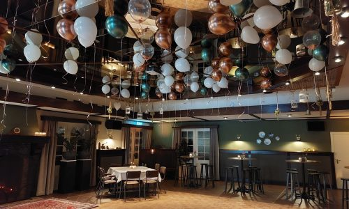
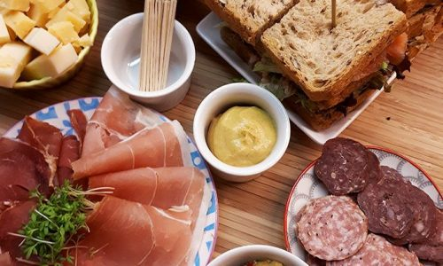
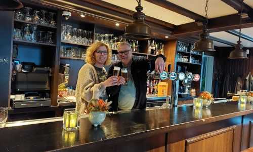
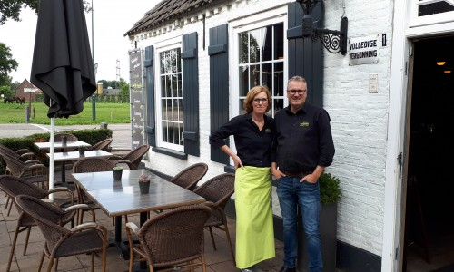
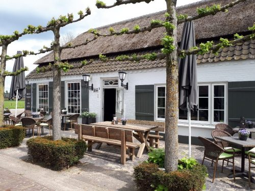
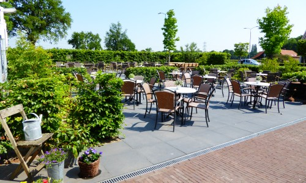
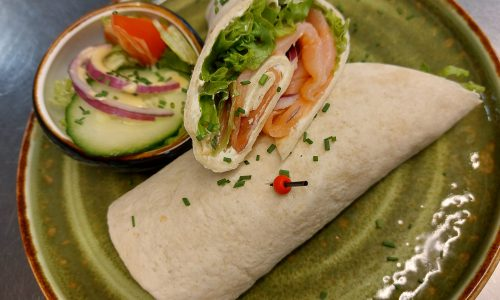
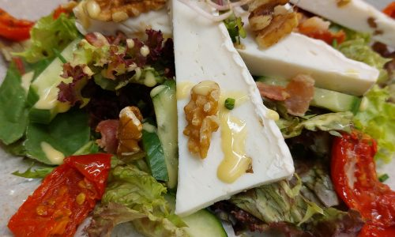
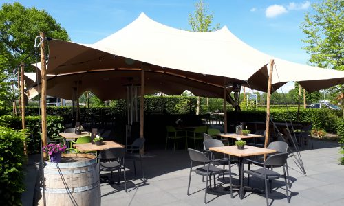
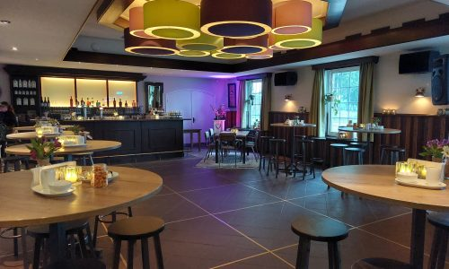
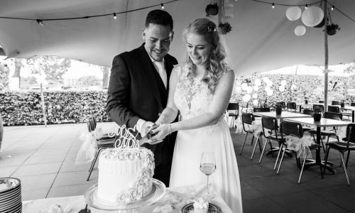
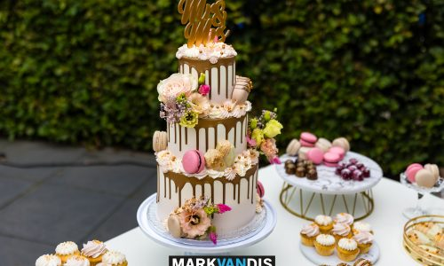
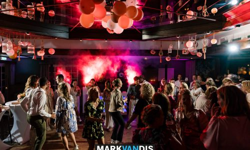
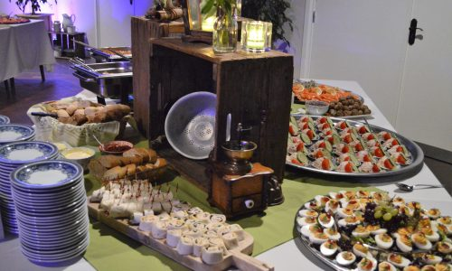
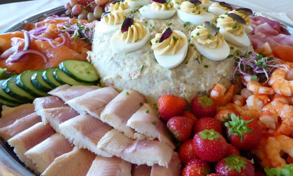
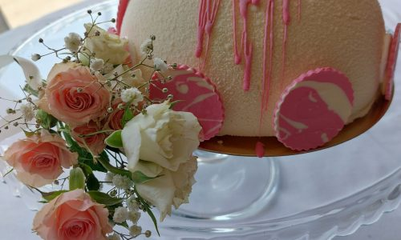
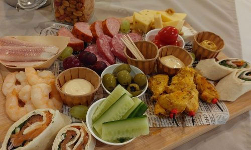
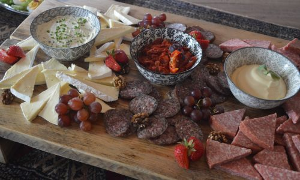
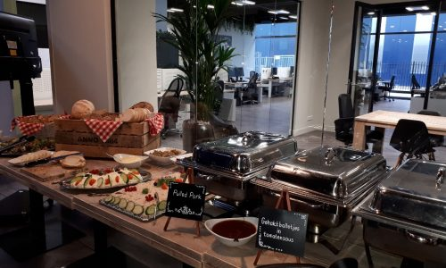
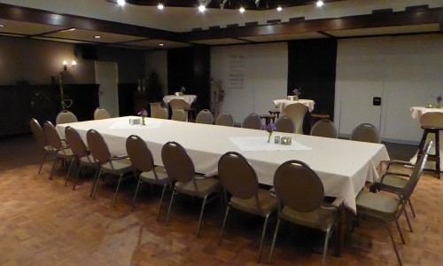
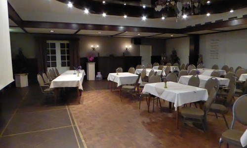
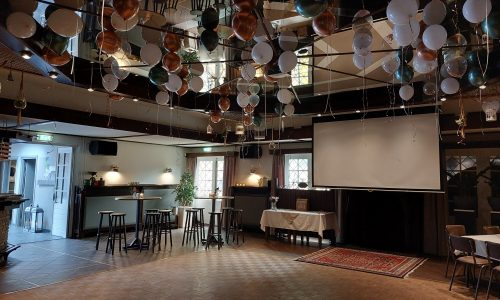
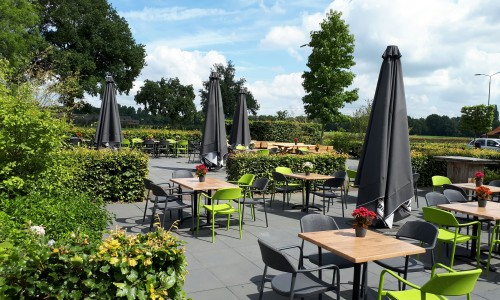
Werken bij 't Draaiboompje
Wil jij een baan met verdraaid leuke collega's? We zoeken een zelfstandig werkende kok en mensen voor in de bediening en de afwas, minimaal 1 keer per weekend. Stuur een mail of bel!
Gastheer / gastvrouw
Hulp in de spoelkeuken
Hulp in de huishouding
Interieurverzorgster.
Zelfstandig werkende kok
't Draaiboompje is een bloeiend bedrijf: een eetcafé met streekproducten, een terras onder de stretchtent dat ook bij slechter weer te gebruiken is, en een zaal voor feesten met hapjes, buffet, diner of barbecue. Je komt in een gezellig team met gevoel voor gastvrijheid. Onze missie: gasten een gerecht bieden waar ze de vingers bij aflikken en een feest verzorgen waar nog lange tijd over gepraat wordt.
Mail ons